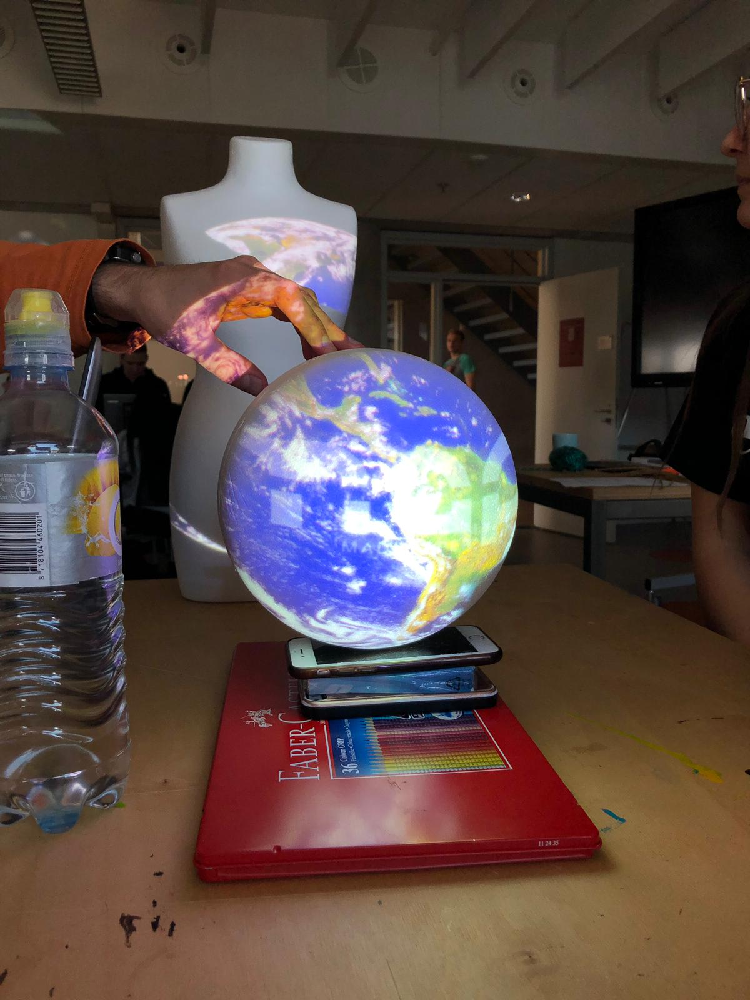

Unreal Engine Assignment
Unreal Engine deel 1 Unreal Engine is een game-engine van spel ontwikkelstudio Epic Games. Voor de eerste opdracht moest ik middels deze tutorial kennis maken met Unreal Engine. Ik heb geleerd hoe je objecten kunt stijlen door er materials aan te maken en deze toe te voegen aan een bepaald object, in dit geval een banaan.Vervolgens moest ik een blueprint aanmaken voor mijn banaan. Met een blueprint kan je een bepaalt gedrag voor objecten maken, zoals een auto laten rijden of een helikopter laten vliegen. Dit is mogelijk met blueprints zonder te coderen. Door een plaatselijke rotatie toe te voegen kan een object draaien. Door deze blueprint te koppelen aan de banaan kan de banaan ronddraaien:
Unreal Engine Assignment
Unreal Engine deel 1 Voor het tweede deel van het assignment heb ik de volgende tutorial gevolgd: Met deze tutorial werd er dieper op de ‘Blueprints’ gegaan. Ik heb een player aangemaakt en deze laten bewegen door deze aan te maken in de Event Graph. Het was ook nodig om er voor te zorgen dat de player niet door alles heen zou zweven en zou reageren op andere objecten in het speelveld. Dit heb ik gedaan door collision in te schakelen. Vervolgens heb ik de bananen aangepast zodat ze zouden verdwijnen wanneer ze werden geraakt door de player en deze in het speelveld geplaatst. Hiermee kon de player de bananen verzamelen. Dit ziet er zo uit:
SAR Assignment
Spatial Augmented Reality Spatial Augmented Reality afgekort SAR, maar beter bekend als Projection Mapping is een projectietechniek waarbij op onregelmatige oppervlakken geprojecteerd wordt met videobeelden.Hiermee kun je een statisch object tot leven laten brengen. Het wordt ingezet op grote oppervlaktes maar ook op kleine voorwerpen. Om dit te kunnen doen heb je naast je object waarop je gaat project waarop je gaat projecteren en een beamer, software nodig. Met de software ga je aan de slag om het object in kaart te brengen, en zo nodig te bewerken op zo het beeld wat je wilt projecteren precies op de oppervlakte te laten passen van je object. Voor het assignment maakte we kennis met een van de vele projectie mapping software genaamd: MadMapper. Tijdens de workshop stonden de beamers al aangesloten op pc’s dus konden we direct aan de slag. Omdat er maar twee beamers waren hebben we in groepjes gewerkt. We gebruikten een piepschuimen bal waarom we een afbeelding van de aarde projecteerden. Vervolgens pasten we de opacity aan op invloed van hoeveel geluid de computer, hierna hadden we de afbeelding aangepast met een video van een draaiende aarde en leek het net alsof de aarde draaide! Er was ook een paspop, we hadden nu geen afbeelding gebruikt maar we gebruikten de webcam en deze live beelden projecteren we op de paspop, wat een erg grappig uitzag. 